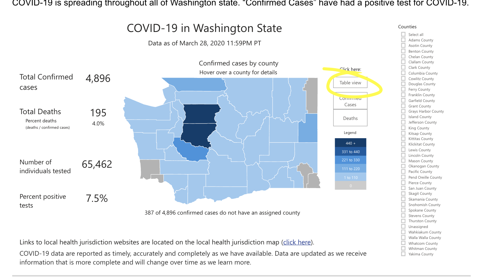
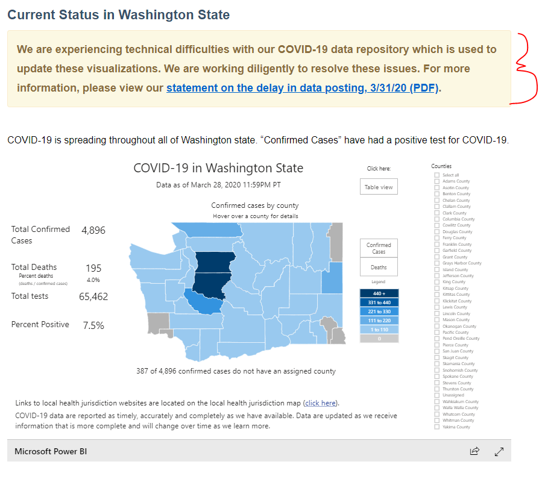

WA: state changed the format of their reporting page
Normally data was being pushed around 3p but today it went long overtime to about 9pm and they changed the whole format. I can’t find a table unless I scroll down to the WA state map and click “Table View”. The data pull for 3/29 is inaccurate. 
Comments
muamichali commented on March 31, 2020 at 7:16 am
Still @ 3/28
bnm91 commented on March 31, 2020 at 8:02 pm
Washington State DOH is reporting an issue that prevents data from being updated.

careeningspace commented on April 27, 2020 at 8:58 am
We are now regularly updating WA data to match. If you right-click on a chart, it will let you see the data in a tabular format. This is not great, but slightly better than mousing over the charts.
Please see Issue #233 for the most recent update.
Thanks!
Still not updated as of now.